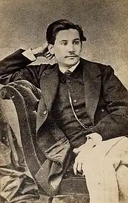
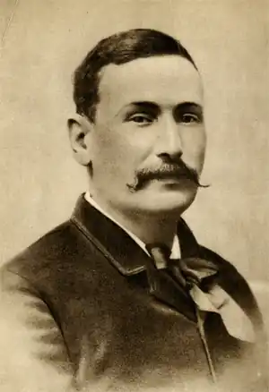

День народження: 10.05.1843 року у Лас-Пальмас-Де-Гран-Канарія, Іспанія
Дата смерті: 04.01.1920 року у Медрід, США
Гальдос Беніто Перес — один з найбільших представників іспанського роману XIX ст., Ідеолог ліберальної іспанської буржуазії, яка бореться з конституційним монархізмом за республіканський лад; юрист за освітою і фахом; брав діяльну участь в політичному житті країни, — депутат республіканської партії. Літературну славу Гальдос завоював своєю історико-романтичної епопеєю (в 46 тт.) "Національні епізоди" (Episodios Nacionales). Епопея охоплює період від вторгнення Наполеона до проголошення першої республіки середини XIX в. Серед романів (їх понад 20), що складають це монументальний твір, найбільш художніми є: "La Corte de Carlos IV" (Двір Карла IV, рос. Перекл., СПБ., 1895) і "Trafalgar" (Трафальгар). Вони написані під безсумнівним впливом, з одного боку, Бальзака ( "Людська комедія"), з іншого — А. Дюма і Еркмана-Шатріана і являють собою високі зразки політичного роману. Гальдос протиставляв в цих романах героїзм і патріотичну самовідданість "народних" героїв безпорадності іспанської буржуазії. Він ставив собі певне завдання — виховати та зміцнити у свідомості читача і, зокрема, молодого покоління, принципи буржуазно-ліберальної політичної моралі. Гальдос попередник таких ідеологів республіканського лібералізму, як Бласко Ібаньєс. Гальдос відомий також і як автор ряду романів, спрямованих проти католицької церкви. Останні були характерні для епохи занепаду колись економічно і політично могутньою Іспанії. З романів цієї серії найбільш популярні і не втратили свого значення в умовах іспанської дійсності "Doña Perfecta" (1876, рос. Перекл., СПБ., 1882 і 1910) і "Gloria" (1877), що викривають жорстокість і реакційну сутність католицизму. Романи Гальдоса — "Lo prohibido" (1885), "Tormento" (2-е изд., 1884), "Fortunata у Jacinta" (1888), "La desheredada" (1890) і "Misericordia" (1897) — зображують в натуралістичних тонах побут "дна" іспанських міст і розкривають соціальну механіку сучасного капіталістичного суспільства.